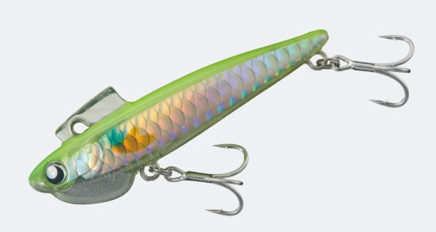
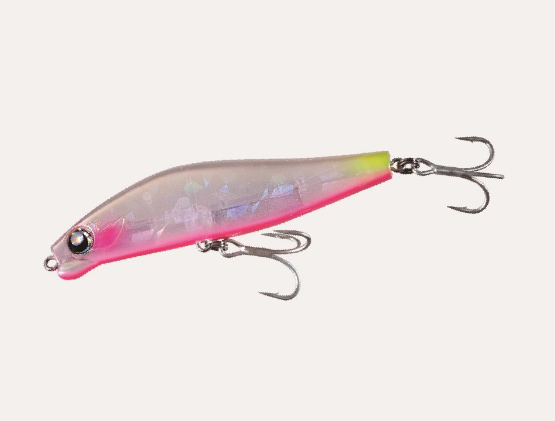

GOTO9（ゴートゥーナイン）生活圏で、空き時間に楽しむショアルアー
バチ抜けの「SWARM」や、身近な人工地形を攻める「Cocon」など、街の近くの釣り場で楽しめるルアーを出しているブランド。特徴、そして人気のルアー・ロッドをまとめました。
基本データ
| ブランド名 | GOTO9 SHORE（ゴートゥーナイン） |
|---|---|
| 本拠地 | 兵庫県西宮市 |
| 運営 | バレーヒル（Valleyhill） |
| 得意ジャンル | シーバス（バチ抜け・港湾・河川）、チヌ |
| 代表ルアー | SWARM（スウォーム）、Cocon68S、Elma90S、KRAMBIT（クランビット）、MINIKOBAKO |
| 代表ロッド | Dianact（ディアナクト） |
| コンセプト | 生活圏の近くで、空き時間にも楽しめる身近なショアルアー |
| 公式 | goto9.jp |
※代表者・製品ラインナップは変わることがあります。最新情報は公式サイトでご確認ください。
GOTO9の3つの特徴
1「生活圏で楽しむ」ショアの釣り
遠征しなくても、家や職場の近くの港湾・河川で、空いた時間に楽しめる釣りがテーマ。身近な釣り場で釣れる魚を、ちょうどいい道具で狙えるようにラインナップが組まれています。
2バチ抜けの「SWARM」
「バチ抜けの直球ど真ん中を突く」ことをコンセプトにしたSWARMシリーズが看板。場所や状況によってスローフロートからスローシンキングに変わる設計で、バチ抜けの時合いの変化に1本で対応できます。
3持ち運びやすい道具
ロッドの「Dianact」は5ピースで、リュックや駅のロッカーに収まる仕舞寸法。仕事の前後や出張先でも釣りに行きやすい道具づくりも、生活圏の釣りというコンセプトにつながっています。
代表的なプロ・テスター
GOTO9の公式サイトには、プロスタッフ・テスターの一覧ページはありません（2026年10月時点）。SWARM130は新 拓也さんの開発と紹介されています。
GOTO9の人気ルアー5選
GOTO9のルアーは、港湾・河川など身近な釣り場の「よくある状況」に合わせて作られています。

SWARM（スウォーム）バチ抜け用ペンシル
GOTO9を代表するバチ抜けルアー。バチ抜けの時合いは序盤・中盤・終盤でパターンが変わりますが、場所によってスローフロートからスローシンキングに変わる設計で、1本で対応できるのが強みです。
80Sは8.6gのシンキングペンシル、130は12gのバリアブルペンシルで、バチの大きさや釣り場の広さで使い分けます。
👉 詳しくは SWARM80Sの解説記事／SWARM130の解説記事 へ

Cocon68S（ココン）シンキングルアー
身近な人工地形を遊び尽くす「3Cコンセプト」から生まれた、新しいジャンルのシンキングルアー。港湾の岸壁や橋脚、テトラ帯などをテールフリップアクションで探れます。
👉 詳しくは Cocon68Sの解説記事 へ

Elma90S（エルマ）シンキングペンシル
小中規模河川や汽水湖など、浅くて流れの弱い場所向けのシンキングペンシル。水平に近い姿勢で泳ぎ、低速では浮遊感のあるテールスイング、中速ではナチュラルなS字、高速では引き波を立てるS字と、速度で動きが変わります。
👉 詳しくは Elma90Sの解説記事 へ

KRAMBIT（クランビット）メタルバイブレーション
特許技術「Snap-Loc System」でフックへの糸絡みを抑えたメタルバイブ。超薄型ボディで巻き抵抗が小さく、立ち上がりも早いので、リフト＆フォールやトゥイッチにも対応します。
潜行の目安は9gで40cm、15gで50cm、25gで80cmまでです。
👉 詳しくは KRAMBITの解説記事 へ

MINIKOBAKO（ミニコバコ）ポッパー
チヌ（クロダイ）とシーバス用の小型ポッパー。低音のポッピング、移動距離を抑えた首振り、水面下約5cmのウォブリングの3つの動きで、スレた魚や壁際でしか追わない魚に口を使わせます。
👉 詳しくは MINIKOBAKOの解説記事 へ
※スペックは代表的なサイズです。リニューアル等で変わる場合があります。
画像出典:GOTO9公式HP
GOTO9のロッド「Dianact」
GOTO9のロッドは「Dianact（ディアナクト）」。年間を通して使える「普段使い」を目指した5ピースロッドで、2モデルが展開されています。
| 85ML5 Duskcall | 78L5 Dawncall | |
| 長さ | 2.57m | 2.34m |
| ルアー | 5〜25g | 3〜15g |
| 得意 | シーバス全般・メタルバイブ | 小型プラグ・チヌ・ライトロック |
最初の1つの選び方
- バチ抜けシーズン → SWARM80S
- 港湾の岸壁・橋脚 → Cocon68S
- 浅い河川・汽水湖 → Elma90S
- 日中に広く探りたい → KRAMBIT 15g
- ロッドを1本選ぶなら → Dianact 85ML5 "Duskcall"
よくある質問
GOTO9はどこのブランド？
兵庫県西宮市のショアルアーブランドで、バレーヒル（Valleyhill）が運営しています。
リールはある？
2026年10月時点の公式サイトでは、ルアー・ロッド・ポーチなどのギアが中心で、リールは掲載されていません。
初心者でも使える？
使えます。KRAMBITはただ巻きでも使え、糸絡みを抑える仕組みもあるので扱いやすいルアーです。